1接线与准备
这套应用不做任何计算上的“补救”，它只是把板卡通过 USB 发来的原始帧画成图。所以准备工作只有一件事：让手机稳定地读到板卡的串口。
你需要
- 一块已刷好 Widscan58 固件的 ESP32-C5 板卡（原生 USB，VID
0x303A/ PID0x1001）。 - 支持 USB Host（OTG）的手机，和一根能传数据的 USB-C 线。很多短线只有电源线芯，插上后手机完全不会弹出设备。
- 不需要充电、不需要网络。应用没有申请任何权限，包括网络权限。
接法
- 板卡 USB-C 口 → 数据线 → 手机 USB-C 口。板卡由手机供电（约 500 mA 上限），不用另外接电源。
- 如果手机只有 USB-C 转 USB-A 的 OTG 转接头，就把板卡的 A 口线插上去；注意这种转接头通常不能同时供电，长时间扫描请留意手机电量。
- 打开应用。应用会自己找板卡，不需要点“连接”按钮。
am start -n com.onebody.widscan58/.Widscan58Activity --ez sim true，
就能在没有硬件的情况下看到完整的 8 信道扫描画面（本教程的截图就是这么来的）。
把 sim 换成 rh true 则直接进入计圈模式。这个入口只用于开发调试，普通使用不需要。2首次连接
没插板卡时，界面是干净的空态：状态行写着「请用 USB-C 连接 Widscan58 板卡。」，中间是「等待频谱数据…」。这时底部按钮看起来仍是亮的，但点「参数」「开始」不会有反应——它们被禁用了，而这个主题下禁用态几乎不变灰，很容易误以为卡住了。
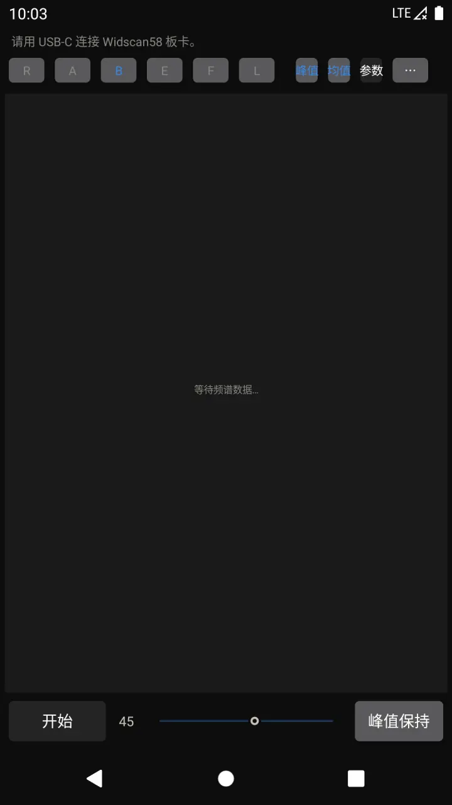
插上之后
- 系统弹出「允许 Widscan58 访问 USB 设备？」。勾选「每次连接此设备时都允许」再点确定，之后每次插板就不用再点一次。
- 应用打开串口，先发送
PROTOCOL MONITOR（把板卡从别的协议手里要回来），然后握手。 - 握手做这几件事：
SCAN STOP→ 把应用自己存的设置写回板卡（CHANNELS …、MODE …、GAIN …、ENABLE …）→SPEC 4 256 40000000 MAX→ 读PROFILE?/STATUS?/SPURS?→SCAN START→INFO。 - 拿到状态帧后，状态行变成一串用「·」隔开的读数，控件全部解锁，并且扫描已经自动开始了。
状态行怎么读
连上以后的样子（模拟设备）：
模拟设备 · c5-race · 1 圈/秒 · 8 次跳频 · 增益 45 · 链路 12%
| 字段 | 含义 |
|---|---|
| 模拟设备 / 设备描述 | 真机连接时显示 USB 设备路径；回放文件时显示「回放 文件名」。 |
| c5-race | 板卡当前的频道计划名。没读到之前显示「连接中…」。 |
| 1 圈/秒 | 整张计划跑完一遍的速度，来自遥测帧。 |
| 8 次跳频 | 当前计划里的信道数（最多 8 个）。 |
| 增益 45 | 接收增益，是 PHY 表的序号不是 dB。 |
| 链路 12% | 板卡发送队列的占用率。越低越好，0% 表示数据一产生就被手机取走了。持续升高说明 USB 带宽或手机侧来不及收，画面会开始掉帧。 |
3主界面：一张图看懂整个频段
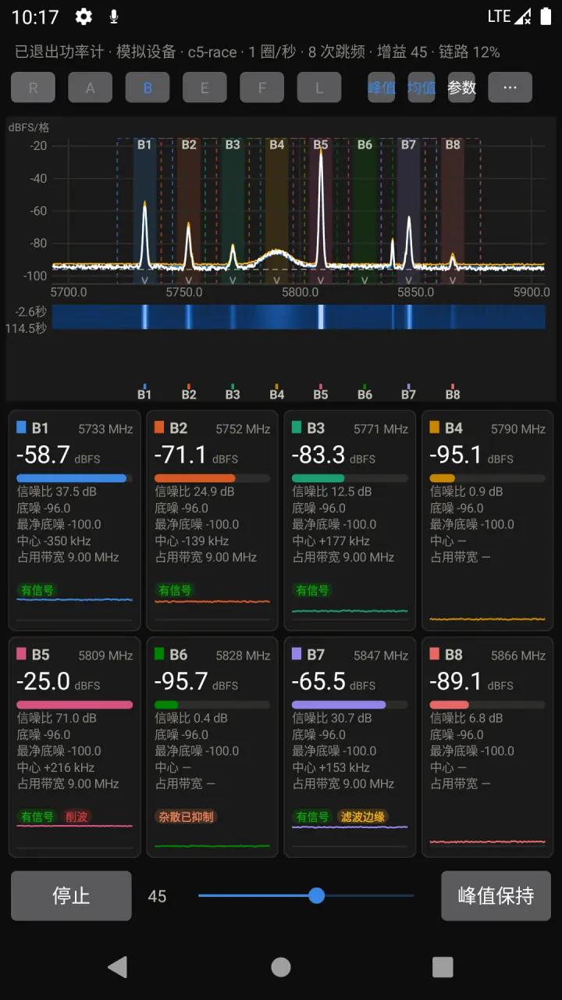
控件条
RABEFL —— 六个 FPV 波段的快捷键，点一下就把整段 8 个频道写进板卡当扫描计划：
| 键 | 波段 | 频率范围 |
|---|---|---|
| R | Raceband | 5658 – 5917 MHz |
| A | Boscam A | 5725 – 5865 MHz |
| B | Boscam B | 5733 – 5866 MHz |
| E | Boscam E | 5645 – 5945 MHz |
| F | Fatshark | 5740 – 5880 MHz |
| L | Low band | 5362 – 5621 MHz |
高亮的那个字母是当前计划第一个频道所属的波段，不是“正在显示哪个波段”。混排计划（比如 R1、B4、L2）时按频率排序后取最靠前的。
峰值 打开/关闭峰值保持曲线（橙色那条），均值 打开/关闭滑动平均曲线。这两个只改显示，不发命令。
参数 打开扫描参数表（第 5 节）。⋯ 其余全部视图。
全景频谱
- 横轴是频率（MHz），纵轴是
dBFS/格——注意是每格，不是绝对值；绝对刻度由「参数 → 显示 dB 范围」决定。 - 彩色半透明竖条 = 计划里的 8 个信道；竖条上的虚线是信道边界。
- 白线 = 最新一次扫描；橙线 = 均值或峰值保持（取决于上面两个开关）。
- 底部一排
V标记 = 该信道当前被启用。 - 在图上左右拖动 = 移动选中指针，卡片会跟着换。
- ⋯ 菜单里的「自动缩放」按当前画面内容重算上下限，信号整体很弱或很强时先点它。
瀑布图
紧贴全景下方，一行 = 一次跳频，越往下越新。左侧两个数字是这列历史的起止秒数。看“某个信道是不是一阵一阵地出现”就看这里：一条竖直亮线 = 持续占用，散点 = 偶发。历史深度和「参数 → 显示频谱（每 N 跳…）」里的“每 N 跳”有关：N 越大，瀑布每行代表的跳数越多、时间跨度越长。
频道卡片
每个信道一张卡：色块 + 信道名 + 中心频率 + 大号电平 + 强度条 + 五行读数 + 徽标 + 右下角迷你趋势线。
| 行 | 含义 |
|---|---|
| −58.7 dBFS | 该信道的当前电平（满量程分贝）。模拟量，不是天线口的 dBm。 |
| 信噪比 37.5 dB | 电平减去底噪。判“有没有人在飞”主要看这个，绝对值低不代表没人。 |
| 底噪 −96.0 | 当前平滑后的本底。 |
| 最净底噪 −100.0 | 历史上见过的最干净本底，用来判断“这个信道以前空过吗”。 |
| 中心 −350 kHz | 能量重心相对信道标称频率的偏移。 |
| 占用带宽 9.00 MHz | 信号实际占掉的带宽；没有信号时显示「—」。 |
徽标
卡片左下角的彩色小标签，是固件判定的结论，不是应用自己猜的：
| 徽标 | 意思 |
|---|---|
| 有信号 | 信噪比越过了判决门限。 |
| 杂散已抑制 | 该读数是板卡内部杂散，已被校准表扣掉。 |
| 数据过期 | 这一格超过 1 秒没更新，通常是链路在掉数据或扫描停了。 |
| 滤波边缘 | 信道落在模拟滤波器的过渡带里，读数会被削。 |
| 削波 | ADC 顶到了。降增益或加衰减，否则数值全部不可信。 |
FULL 再观察；
在 RSSI/SNR 模式下固件只回精简帧，安静信道会统一读成 −63.8 dBFS、信噪比 0，这是固件行为不是 bug。底部
开始 / 停止 控制扫描，未连接时禁用。45 ───── 增益滑条，松手才发一条命令（不会一路刷板卡）。 峰值保持 清空峰值保持曲线，让橙线重新从当前值开始。
4频道细节：把单个信道摊开看
点任意一张卡片（或在主界面全景上选中某信道）就打开「频道细节」。这是逐信道排查最好用的一屏。
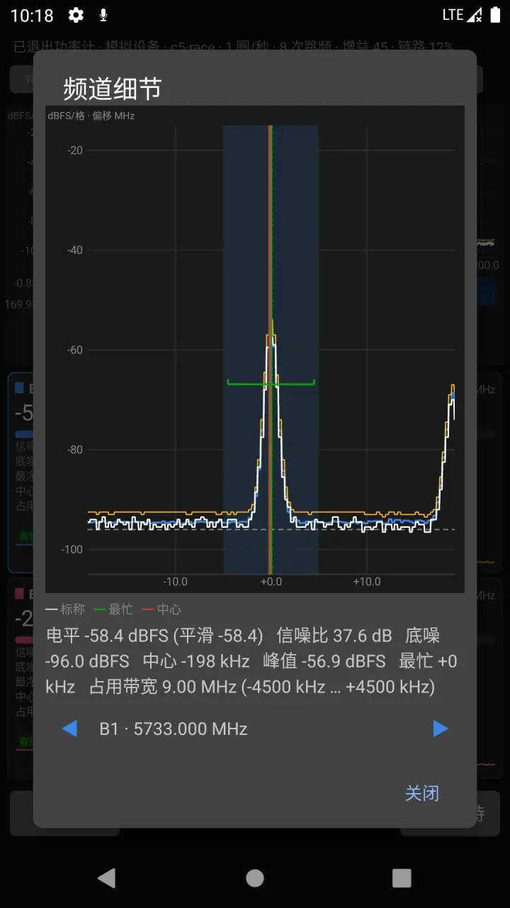
- 标称 白线：该信道的实际采样频谱。
- 最忙 绿线：历史最忙包络；横线两端就是占用带宽。
- 中心 红线：能量重心位置。
- 下面一行的读数：电平（含平滑值）、信噪比、底噪、中心偏移、峰值、最忙点、占用带宽及其起止偏移。
- 底部 ◀ ▶ 在计划内的信道之间切换，不用退回主界面。
典型用法：怀疑两个信道互相干扰时，在这里看绿线的“脚”有没有伸进隔壁信道；调 VTX 时看红线离 0 偏移有多远。
5扫描参数（⋯ 之外的所有可调项）
点控件条的「参数」打开。这个表的原则是一个控件对应一条固件命令，每次改完都会重读 STATUS?，所以你看到的是板卡的真实状态，不是应用记住的期望值。
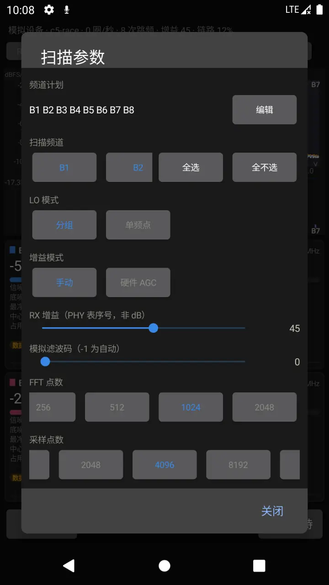
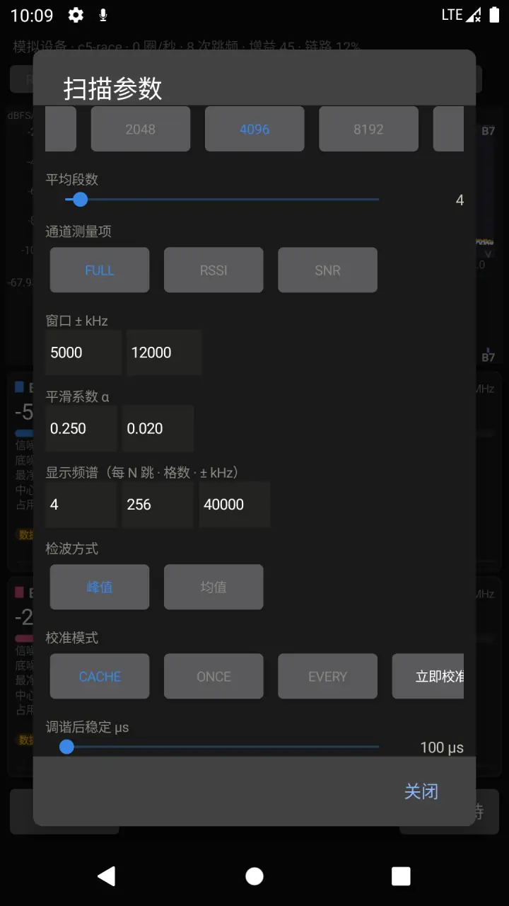
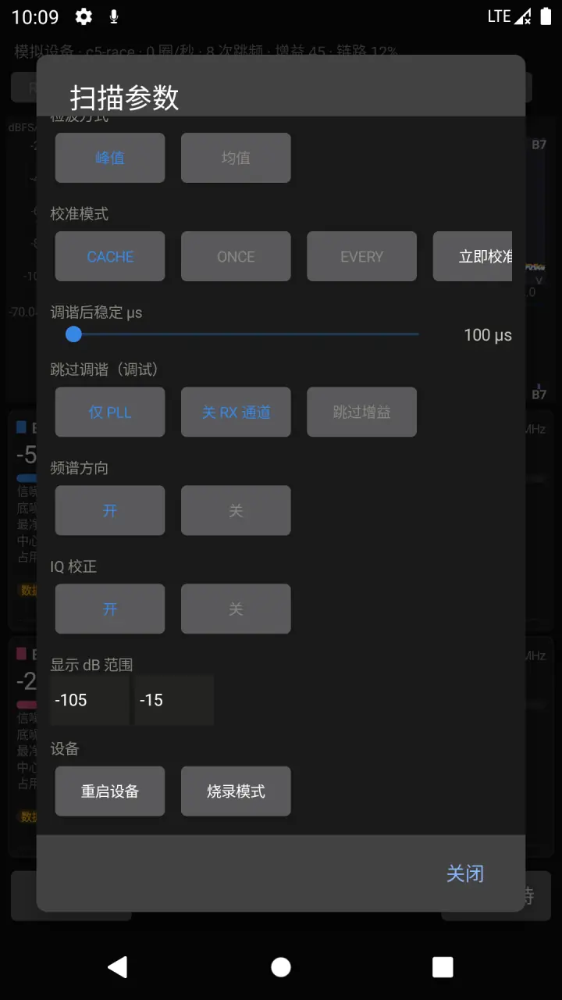
| 控件 | 作用 | 建议 |
|---|---|---|
| 频道计划 → 编辑 | 换扫描哪 8 个频道（见第 6 节）。 | 日常只在这里改。 |
| 扫描频道 · 全选 / 全不选 | 在已选计划内临时启用/停用个别频道。 | 计划里的频道芯片在没读到状态前是禁用的。 |
| LO 模式：分组 / 单频点 | 本振按信道分组跳，还是固定单频点。 | 保持「分组」。单频点用于把某个频率盯死。 |
| 增益模式：手动 / 硬件 AGC | 接收增益由滑条定，还是交给前端自动跟。 | 比较功率、看底噪用「手动」；只想看有没有信号可以用 AGC。 |
| RX 增益（PHY 表序号，非 dB） | 0 到板卡上报的上限（例中 82）。不是 dB，别拿两档之差当 dB 用。 | 出现「削波」就往下降档，直到削波消失。 |
| 模拟滤波码（−1 为自动） | 选前端模拟滤波器的档位；−1 让固件自己挑。 | 默认自动。 |
| FFT 点数 64…2048 | 每次采集做 FFT 的点数（64/128/256/512/1024/2048），决定频率分辨率。 | 档案默认 1024。调大更细但每跳更慢。 |
| 采样点数（横向可滑） | 每次采集多少个原始样本（256…16380）。 | 档案默认 4096。和 FFT 点数一起决定“每跳耗时”里的采集项。 |
| 平均段数 | 把多次结果平均成一条读数，1–64。 | 越大越平滑、越迟钝。找瞬时干扰时调回 1。 |
| 通道测量项 FULL / RSSI / SNR | 固件回多少测量细节。FULL 回完整电平帧，另两种只回精简项。 | 想看徽标、占用带宽、中心偏移就用 FULL。 |
| 窗口 ± kHz（RSSI / 搜索） | 算 RSSI 用的积分窗口，和找峰时向两侧搜索的范围。 | 默认 5000 / 12000。信号很宽时把搜索窗调大。 |
| 平滑系数 α（RSSI / 底噪） | 两个指数平滑系数，越接近 1 跟得越快、越接近 0 越稳。 | 默认 0.250 / 0.020。底噪那条故意很慢，是为了留住“最净底噪”。 |
| 显示频谱（每 N 跳 · 格数 · ± kHz） | 全景与瀑布的取样方式：每几跳画一行、横向多少格、覆盖多宽。 | 默认 4 / 256 / 40000。想让瀑布更“长记性”就加大 N。 |
| 检波方式 峰值 / 均值 | 频谱每一格取最大值还是平均值。 | 找窄带尖峰用峰值，看宽带功率用均值。 |
| 校准模式 CACHE / ONCE / EVERY + 立即校准 | 本底校准表怎么复用：CACHE 用存下来的表，ONCE 开机校一次，EVERY 每跳都校。 | 平时 CACHE。换了天线、加了衰减、或怀疑杂散判错时点「立即校准」。 |
| 调谐后稳定 µs | PLL 锁定后额外等多久再采。 | 默认 100 µs。改信道出现毛刺边带时往上加。 |
| 跳过调谐（调试）：仅 PLL / 关 RX 通道 / 跳过增益 | 调试用的旁路开关，会明显改变读数含义。 | 不要在日常使用里打开。 |
| 频谱方向 开 / 关 | I/Q 共轭，等价于把频谱左右翻转。 | 如果发现“高侧的信号画到了低侧”，切这个。 |
| IQ 校正 开 / 关 | 镜像抑制与直流偏置校正。 | 保持开。关掉后中心会出现一根假的直流尖峰。 |
| 显示 dB 范围（下限 / 上限） | 纯显示：纵轴的 −105 … −15。 | 也可以直接用 ⋯ → 自动缩放。 |
| 设备：重启设备 / 烧录模式 | 发 REBOOT 或 BOOTLOADER。 | 「烧录模式」会让板卡进 ROM 下载口，扫描会一直停到你重新烧录或按复位。别在手滑时点。 |
6换频道计划
「参数 → 频道计划 → 编辑」打开选择器：
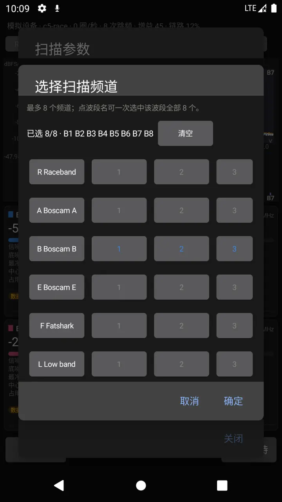
- 点波段名（如
B Boscam B）一次选中该波段全部 8 个；点编号逐个加选。 - 顶部「已选 8/8 · B1 B2 …」实时汇总，「清空」一键归零。
- 「确定」才下发；「取消」什么都不改。
CHANNELS R1=5658 …，所以信道编号 B1…B8 是“按频率排第几”，不一定等于波段表里的序号。7⋯ 菜单：所有入口
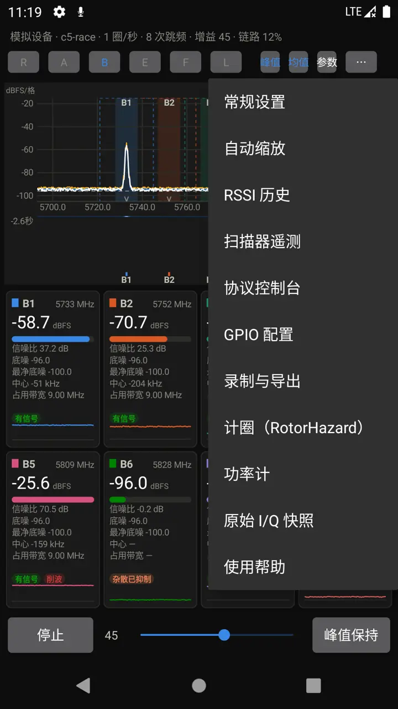
| 菜单项 | 干什么 | 本教程 |
|---|---|---|
| 常规设置 | 界面语言：中文 / English / 跟随系统。中文是装机默认。 | 换语言会重建界面，串口跟着断一次再自动重连，正在跑的扫描会短暂中断；正在计圈时换语言会结束那次计圈、圈数清零。 |
| 自动缩放 | 按当前画面重算纵轴上下限，点了就收 | 第 3 节 |
| RSSI 历史 | 各信道电平随时间变化 | 第 8 节 |
| 扫描器遥测 | 每跳耗时、吞吐、错误、内存 | 第 9 节 |
| 协议控制台 | 原始帧/JSON 日志 + 手发命令 | 第 10 节 |
| GPIO 配置 | 板卡输出引脚 | 第 11 节 |
| 录制与导出 | .widscan58 录制/回放、CSV | 第 12 节 |
| 计圈（RotorHazard） | 把板卡当无人机计时器接收机 | 第 13 节 |
| 功率计 | 经衰减器折算成 mW / dBm | 第 14 节 |
| 原始 I/Q 快照 | 抓一段 I/Q 看星座与频谱 | 第 15 节 |
| 使用帮助 | 打开本教程：离线页面，不联网、不申请权限 | 就是这一页 |
下面按菜单顺序逐个讲。除了「自动缩放」是一次性动作，其余都是主界面之上的浮层：点右下角「关闭」或按返回键退出，扫描照旧在跑。只有「使用帮助」会另开一个页面——它是真正的新窗口，所以按上面的规则，打开它时串口会先关掉（状态行短暂显示「已暂停」），按返回键回主界面后自动重连、重新握手，见第 16 节。
8RSSI 历史
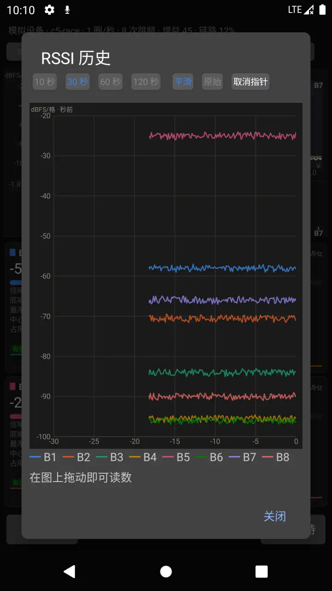
- 10 秒…120 秒 选回看时长。
- 平滑 / 原始 切换画指数平滑后的线还是逐点原始线。找抖动来源时用原始。
- 在图上横向拖动会立起指针，直接读该时刻每个信道的电平；「取消指针」清掉。
- 曲线左端空一截是正常的：那个时间点还没有采样（视图刚打开，或那段时间断链）。
用途：判断干扰是常驻还是间歇。B5 一直压在 −25 而 B1 每隔十几秒抬一次，前者是固定发射机，后者更像有人遥控开关机。
9扫描器遥测
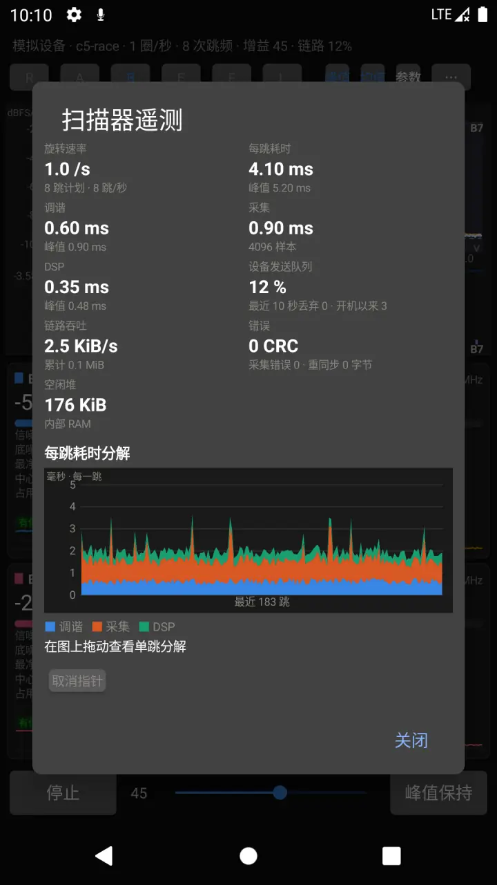
| 指标 | 含义 / 异常时怎么办 |
|---|---|
| 旋转速率 | 整张计划每秒跑几圈。明显低于「圈/秒」预期时看下面的分解。 |
| 每跳耗时 | 跳一个信道到出结果要多久，附峰值。调谐+采集+DSP 三项之和。 |
| 调谐 / 采集 / DSP | 三段的分项耗时。采集项大 → 减小「采样点数」或「FFT 点数」；调谐项大 → 减小「调谐后稳定 µs」。 |
| 设备发送队列 | 就是状态行的「链路 %」。持续高 → 手机取不走数据，先怀疑线和 OTG 口。 |
| 链路吞吐 | 实际字节速率与累计量，用来判断是不是某个设置把带宽吃光了。 |
| 错误 | 0 CRC 是好的。CRC 在涨 = 物理层在坏，换线；「重同步 N 字节」是丢帧后重新对齐的代价。 |
| 空闲堆 | 板卡内部 RAM 剩余。一路往下掉不回升 = 固件内存问题，把数值记下来反馈。 |
| 每跳耗时分解 | 堆叠面积图，最近 N 跳。在图上拖动看单跳分解，能抓到偶发的慢跳。 |
10协议控制台
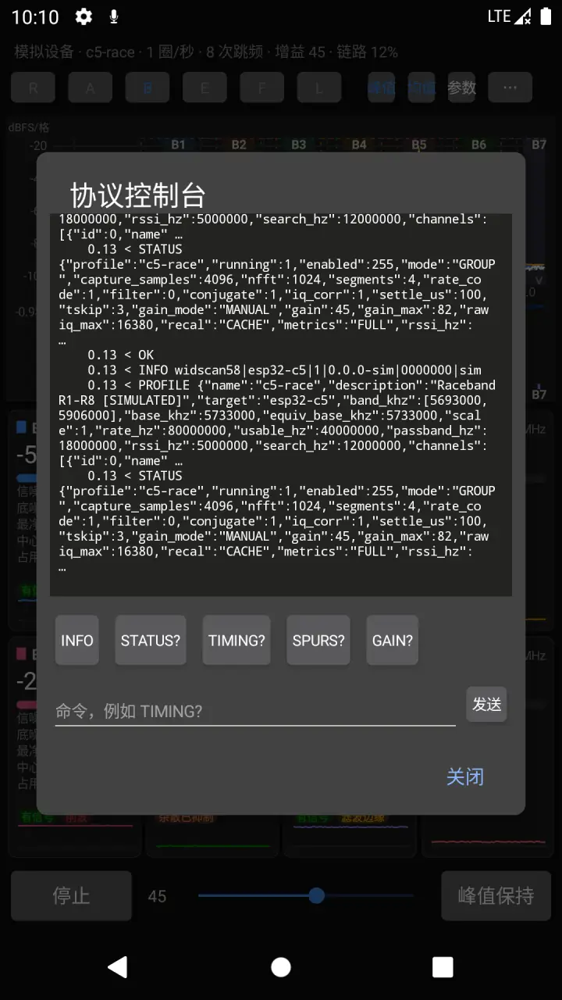
- 日志行格式
0.13 < STATUS {…}：时间戳（秒）、方向、帧名、负载。>是应用发给板卡的，<是板卡回来的。 - 快捷键 INFOSTATUS?TIMING?SPURS?GAIN? 就是替你敲这几条命令。
- 输入框可以发任意固件命令，例如
TIMING?、GPIO 2 HIGH、METRICS FULL。按「发送」。 - 设备自己打印的日志帧（
INFO widscan58|esp32-c5|…）也混在这里，是排查固件问题的第一手材料。
STATUS?。不确定含义的命令别乱发，尤其是 REBOOT / BOOTLOADER。11GPIO 配置
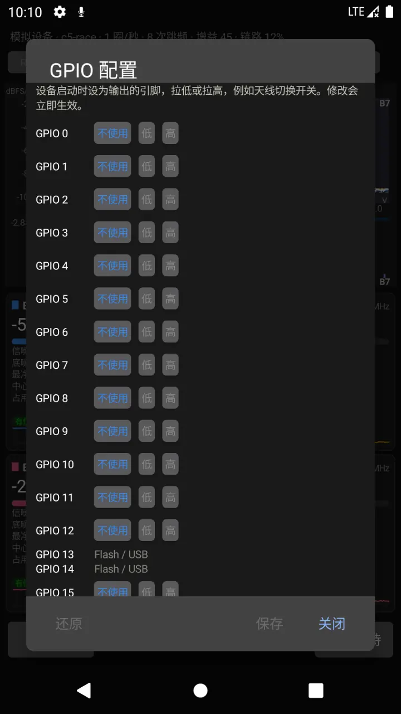
- 说明文字已经点明用途：设备启动时设为输出的引脚，拉低或拉高，例如天线切换开关。改完立即生效。
- 标成
Flash / USB的引脚（例中 GPIO 13、14）被占用，不能配。 - 「保存」把当前选择写进板卡的启动配置，「还原」丢掉未保存的改动——两个按钮只有在你真的改过东西之后才可点。
12录制与导出
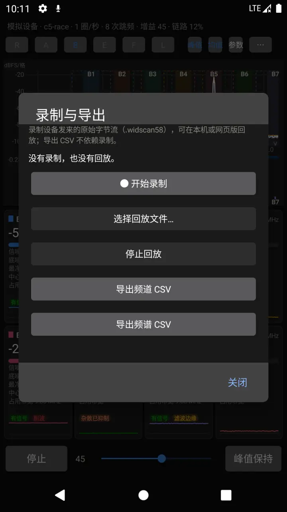
| 动作 | 说明 |
|---|---|
| 开始录制 | 把设备发来的原始字节流写成 .widscan58 文件。回放时走的解析路径和真板卡一模一样，所以能拿去网页版复现同一个现场。 |
| 选择回放文件… | 挑一个 .widscan58 回放。回放期间状态行显示「回放 文件名」，并提示「回放是只读的：不能再发送命令」——你不能给一个文件发命令。文件里没有完整记录时会写「这个文件里没有一条完整记录」，放完写「回放结束」并回到待机。 |
| 停止回放 | 只在回放中可点。 |
| 导出频道 CSV | 计划里每个信道一行，最后一次跳到的全部读数：id, name, freq_khz, enabled, flags, rssi_dbfs, rssi_ema_dbfs, noise_dbfs, snr_db, clear_floor_dbfs, peak_dbfs, peak_offset_hz, centroid_offset_hz, obw_lo_hz, obw_hi_hz, age_s。 |
| 导出频谱 CSV | 把全景横向离散成 1000 个点，每行 freq_khz, live_dbfs, max_hold_dbfs, avg_dbfs, noise_floor_dbfs——导的是画面本身，拿去别的软件能重画。导出不依赖录制，连着板卡就能导。 |
两种 CSV 都没有测到的格子留空字段（不是 0，也不是 NaN）。导出用系统的文件选择器（SAF），可以存到“下载”、SD 卡或任意文件客户端的目录。成功后状态行写「已保存 …」并带上文件名和大小。
13计圈（RotorHazard）
这个模式把板卡变成无人机穿越赛的计时接收机：8 个座位各守一个信道，飞手骑车过门限线时判定过线并计圈。打开后板卡不再跑普通扫描计划，状态行会追加「计圈（RotorHazard）」。
--ez rh true 启动模拟计圈。」进入过程中状态行写「正在进入计圈模式…」，退出后写「已退出计圈模式」。座位
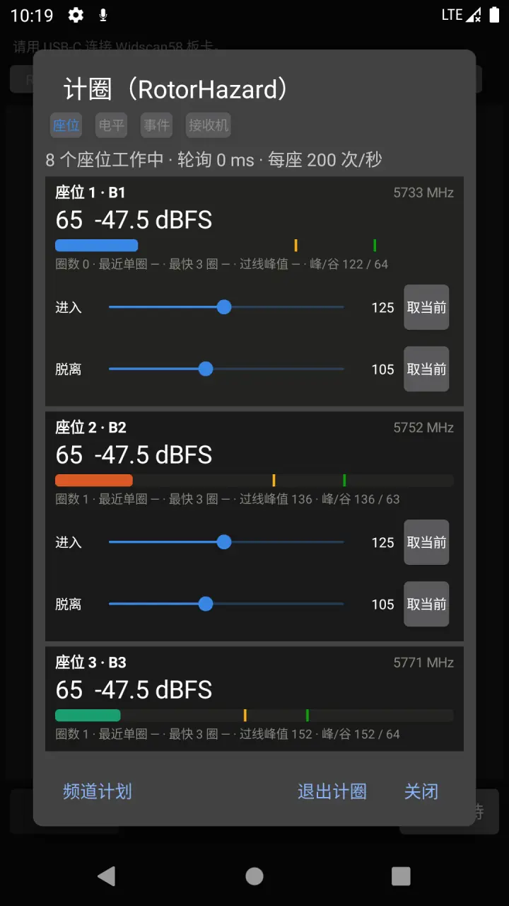
- 顶部「8 个座位工作中 · 轮询 0 ms · 每座 200 次/秒」是固件回报的工作状态。
- 大号数字（例中 65）是原始码值，旁边 −47.5 dBFS 是换算后的电平。横条上的橙线=进入门限、绿线=脱离门限。
- 「进入」「脱离」两条滑条设定迟滞门限：电平冲过“进入”算过线，回落到“脱离”以下才允许下一次过线。两条太接近会一次过线记多圈。
- 「取当前」把滑条值设成此刻读到的电平——最常用的调门限方法：先让赛道空着，记下底噪，再让车手在起点冲一次，把门限卡在两者之间。
- 「圈数 / 最近单圈 / 最快 3 圈 / 过线峰值 / 峰·谷」是该座位的统计。
电平
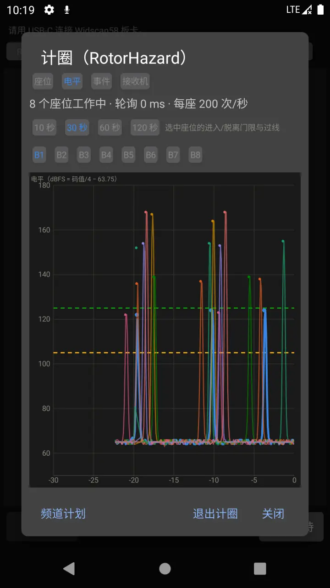
- 10 秒…120 秒 回看时长；B1…B8 选要看哪个座位（没分到信道的座位不可点）。
- 绿虚线 = 进入门限，橙虚线 = 脱离门限，圆点 = 判定为过线的那一帧。
- 纵轴是码值，换算式直接标在图上：
dBFS = 码值/4 − 63.75。 - 调门限基本都靠这一屏：把车手真实过线的尖峰和底噪带拉开，门限画在中间。
事件
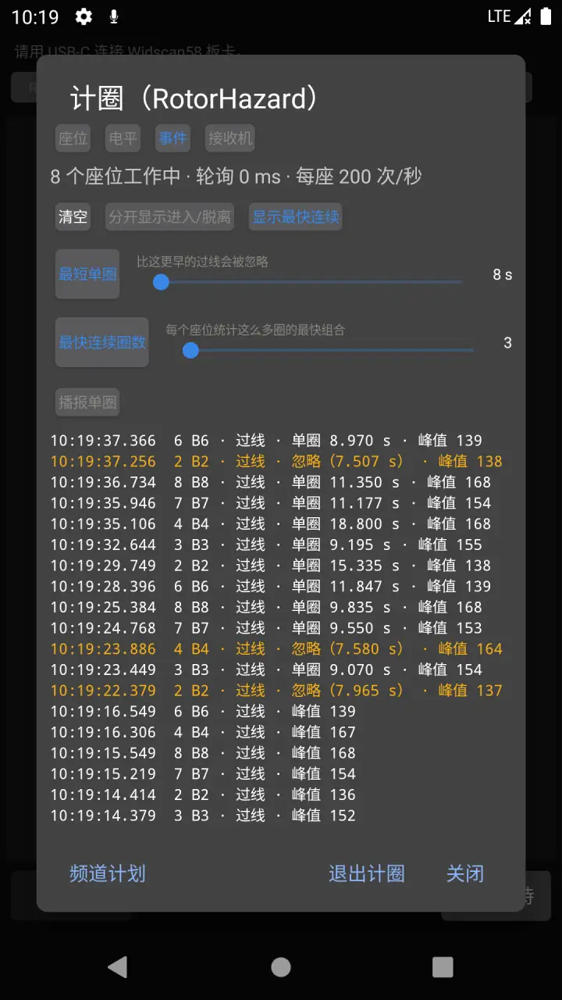
- 每行：
时刻 · 座位 · 信道 · 过线 · 单圈 8.970 s · 峰值 139。橙色行写着「忽略 (7.507 s)」= 短于「最短单圈」，判为抖动。 - 清空 清掉列表。分开显示进入/脱离 把两类事件拆成两行看迟滞。
- 显示最快连续 只有在固件开启了最快圈规则时可点。
- 最短单圈 滑条（例中 8 s）：比这更早的过线会被忽略——防抖主开关。最快连续圈数（例中 3）：统计几圈组合的最快成绩。
- 播报单圈 打开后用系统语音念过线成绩，下面会多出试播和音量/语速/音调滑条。
接收机
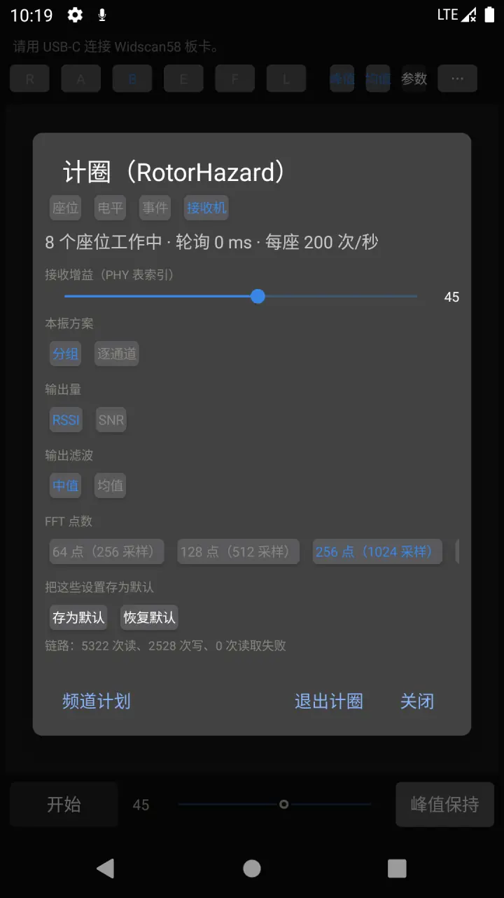
| 控件 | 作用 |
|---|---|
| 接收增益（PHY 表索引） | 和主界面的增益是同一个量，这里独立可调。 |
| 本振方案：分组 / 逐通道 | 座位按信道分组跳，还是逐通道轮询。 |
| 输出量：RSSI / SNR | 喂给计时算法的是绝对电平还是信噪比。场地底噪稳定用 RSSI，有共用频源时用 SNR。 |
| 输出滤波：中值 / 均值 | 中值抗脉冲，均值更平滑。 |
| FFT 点数 | 例中 64/128/256 点（括号里是需要的原始采样数）。点数越多分辨率越高、每座更新率越低。 |
| 存为默认 / 恢复默认 | 把这一整组写进板卡，下次开机就是它。 |
| 链路：N 次读、M 次写、K 次读取失败 | 计圈期间的通信计数。“读取失败”在涨就是轮询跟不上，降 FFT 点数或减少座位数。 |
底部「频道计划」直接跳到第 6 节的选择器；「退出计圈」把板卡交还给普通扫描。
14功率计
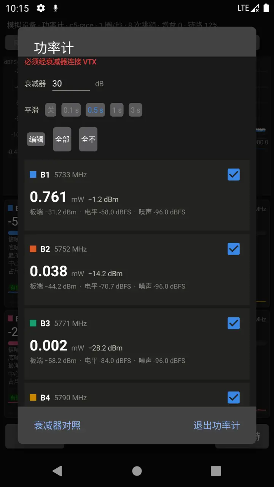
- 衰减器 30 dB 你在天线口串了多少 dB，这里就填多少。所有 dBm / mW 都是加上这个数以后的天线口功率，「板端 −31.2 dBm」才是板卡自己看到的值。
- 平滑 关 / 0.1 s / 0.5 s / 1 s / 3 s 时间常数。测稳态功率用 0.5 s 以上，看脉冲调制切「关」。
- 编辑 进入勾选模式，全部 / 全不 快速选要显示哪些信道。
- 每行三个来源值：电平（dBFS）、噪声（dBFS）、板端（dBm），大字是折算后的 mW 与 dBm。
- 「衰减器对照」打开一张选型表，四列是 VTX 功率 / 衰减器 / 板端 / 耐功率：25 mW(+14 dBm) 配 30 dB、板端 −16 dBm、衰减器耐 0.5 W 以上；500 mW(+27) 配 40 dB、板端 −13、耐 1 W；1 W(+30) 配 40 dB、板端 −10、耐 2 W；2 W(+33) 配 40 dB、板端 −7、耐 5 W。ESP 前端大约只能读 −32 … −5 dBm，衰减量按表里“至少足够”的那一档往上取。
- 「退出功率计」把板卡交还给普通扫描。
进入功率计时应用会替你切到测量用的那套扫描（单 LO、手动增益 0、±15 MHz 窗口），退出时把原来的 MODE / GAIN 等还原回去。所以：
- 中途拔线就还原不了，重新连上后去「参数」确认。
- 如果你自己在功率计开着时改了增益或 LO 模式，会看到「设备现在不是测量用的那套扫描」——退出再进一次即可。
- 底部那行小字说明功率值来自单块 C5 的校准，只是近似值；衰减器标称值也常常不准，把它当相对功率用。
15原始 I/Q 快照
抓一段未经 FFT 的 I/Q 原始样本，用来回答“这个尖峰是真的还是算法/镜像造出来的”。
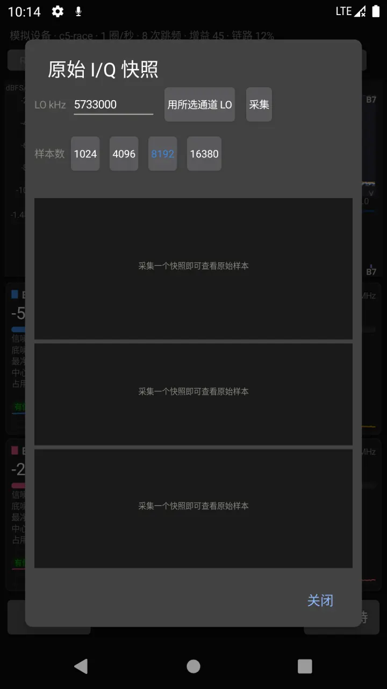
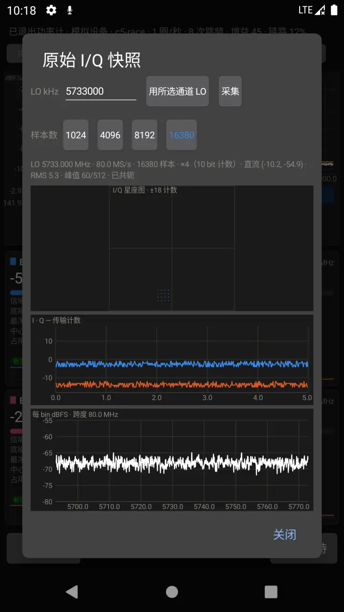
- LO kHz 本振频率，单位 kHz（5733000 = 5733 MHz）。点用所选通道 LO直接填当前信道的频率。
- 样本数 1024 / 4096 / 8192 / 16380 抓多少点。上限由板卡在
STATUS?里报的rawiq_max决定，超过上限的档位会被禁用（禁用态在这个主题下不明显，看点了有没有反应）。 - 点采集。板卡分块（每块 1024 点）把样本推过来，全部到齐后一次算 FFT——不是每帧重算。
三块画布
| 画布 | 看什么 |
|---|---|
| I/Q 星座图 | 横 I 纵 Q。载波正好在本振上 → 聚成一个点；有偏移 → 转圈的弧或环；镜像/直流问题 → 点云整体偏心。 |
| I·Q — 传输计数 | 两路随样本号的原始波形，蓝 I 橙 Q。看有没有削顶、有没有明显的直流偏置。 |
| 每 bin dBFS | 用这段快照自己算出的频谱，横轴是真实频率。和主界面的全景对照着看，能确认尖峰是真的。 |
标题下面那行小字是这段快照的体检报告：LO 5733.000 MHz · 80.0 MS/s · 16380 样本 · ×4（10 bit 计数）· 直流 (−10.2, −54.9) · RMS 5.3 · 峰值 60/512 · 已共轭。其中「×4（10 bit 计数）」说明画的是传输值放大后的刻度；「直流」是 I/Q 两路的直流偏置；「已共轭」表示频谱方向开关生效了。
16断链与常见故障
状态行是唯一的“诊断面板”，出问题先看它写什么。
| 现象 / 状态行 | 原因 | 怎么办 |
|---|---|---|
| 请用 USB-C 连接 Widscan58 板卡。 | 没找到板卡 | 换一根数据线；确认手机开了 OTG；板卡通电指示灯要亮。 |
| 已断开：permission denied for … | USB 授权弹窗被点了拒绝 | 拔掉重插，这次勾上「每次连接此设备时都允许」。 |
| /dev/bus/usb/… 不是 CDC 串口 | 设备枚举出来了，但没有 CDC 数据接口 | 固件没跑起来（停在 bootloader）或板子不是原生 USB 型号。重新上电；必要时重刷固件。 |
| 打开失败：… | 串口被别的程序占着 | 关掉电脑上或手机上其他连着这块板的应用（浏览器版的串口工具是最常见的元凶）。 |
| 已暂停 | 应用离开了前台：退到后台、打开「使用帮助」，或在「常规设置」里换了语言——串口按设计关闭了 | 回到主界面会自动重连并重新握手，不用拔线。 |
| 无数据，重新进入监听模式 | 串口还开着但板卡超过 3 秒没发东西 | 应用会自动重发 PROTOCOL MONITOR 并重新握手。反复出现说明固件在重启，去看协议控制台的设备日志。 |
| 连接中… | 握手没完成 | 等几秒；不行就拔插一次。 |
| 卡片全是「数据过期」 | 扫描停了或链路断了 | 按「开始」；确认状态行里链路 % 不是 100%。 |
| 链路 % 持续很高 / CRC 在涨 | USB 带宽或线材不稳 | 换短线、去掉转接头、降低「采样点数」或「FFT 点数」。 |
| 「这块板没有功率校准：功率计模式需要 ESP32-C5 板卡」 | 功率计的 mW/dBm 换算表是按 C5 标定的，别的板没有这张表 | 换 C5 板，或者只看 dBFS 相对值。 |
| 卡片出现「削波」 | 增益太高或没加衰减 | 降 RX 增益；测发射机必须串衰减器。 |
| 安静信道都读 −63.8、信噪比 0 | 固件在 RSSI/SNR 测量模式下只回精简帧 | 把「通道测量项」切回 FULL。这是固件行为，不是应用算错。 |
| 点「参数」「开始」没反应 | 还没连上设备，按钮是禁用的，而禁用态几乎不变灰 | 看状态行是否已经出现设备描述。 |
17术语表
| 术语 | 在本应用里指什么 |
|---|---|
| dBFS | 相对 ADC 满量程的分贝数，不是天线口功率。0 dBFS 是顶格，越负越弱。要看真实功率请用功率计模式并填对衰减量。 |
| 底噪 / 最净底噪 | 当前平滑本底 / 历史上见过的最低本底。两者差得多说明有间歇性干扰。 |
| 信噪比 SNR | 电平 − 底噪。判占用的第一指标。 |
| 占用带宽 OBW | 信号实际吃掉的带宽，由「最忙」包络算出。 |
| 中心偏移 | 能量重心相对信道标称频率的偏移，单位 kHz。 |
| LO / 本振 | 接收机的中频基准频率。分组模式下每个信道有自己的 LO。 |
| 跳频 / 一圈 | 板卡依次切过计划里的每个信道叫一次跳；把整张计划走完一遍叫一圈。 |
| 链路 % | 板卡输出队列占用率（千分比换算）。0% 最健康。 |
| PHY 表序号 | ESP32-C5 接收增益不是连续 dB，而是查表；这里给的是表下标。 |
| 检波方式 | 每格取峰值还是均值，沿用模拟仪表的叫法。 |
| 校准（CACHE/ONCE/EVERY） | 板卡测自己的杂散与本底并扣掉。CACHE 复用存好的表，ONCE 开机一次，EVERY 每跳现校。 |
| 杂散 spur | 接收机自己产生的假信号。被校准表认出来的会标成「杂散已抑制」。 |
| I/Q | 正交两路基带样本。原始 I/Q 快照抓的就是它，FFT 之前。 |
| 共轭 / 频谱方向 | 把 I/Q 取共轭等价于频谱左右翻转，用来纠正接线带来的上下边带颠倒。 |
| 座位 seat | RotorHazard 里的一个计时通道，对应一个信道和一个门限。 |
| 进入 / 脱离门限 | 迟滞比较的两个电平：冲过“进入”算过线，跌回“脱离”以下才复位。 |
| .widscan58 | 录制下来的原始字节流，可回放，也能在网页版打开。 |